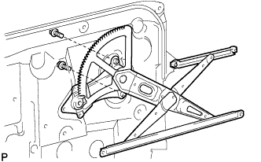
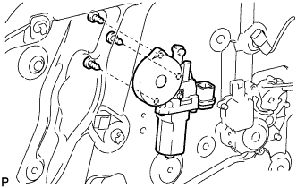
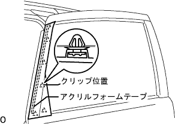

スライドドア 取り付け |
| 1. スライドドア ローラASSY LWR LH取り付け |
ボルト3本でスライドドアローラASSY LWR LHをスライドドア LHに取り付ける。
| 2. スライドドア ローラASSY UPR LH取り付け |
ボルト2本でスライドドアローラASSY UPR LHをスライドドア LH取り付ける。
| 3. スライドドア ヒンジASSY CTR LH取り付け |
ボルト3本でスライドドア ヒンジASSY CTR LHをスライドドア LH取り付ける。
| 4. スライドドア LH取り付け |
車両後方からスライドドア LHのスライドドアヒンジ ASSY CTR LHをスライドドアレール CTR LHに入れる。
スライドドア LHのスライドドアローラ ASSY UPR LHをスライドドアレール UPR後方切り欠き部より入れる。
 |
スライドドアローラASSY LWR LH をスライドドアレールLWRの切り欠き部より入れる。
| 5. スライドドアロワーレール プレート LH取り付け |
ボルト1本で、スライドドア ロワー レール プレート LHを取り付ける。
| 6. スライドドアアッパレール クッション LH取り付け |
| 7. フロントドア アウトサイドハンドル LH取り付け |
フロントドア アウトサイドハンドル LHの摺動部に、ボデーグリースを塗布する。
フロントドア アウトサイドハンドル LHをスライドドアパネル LHに組み付ける。
トルクスソケットレンチ(T30)を使用してスクリュー1本を締め付ける。
| 8. フロントドアアウトサイド ハンドルASSY LH取り付け |
 |
フロントドアアウトサイドハンドルパッドRRと、フロントドアアウトサイドハンドルパッドLHを組み付ける。
フロントドア アウトサイドハンドル LHのベルクランク部を下側に下げる。
フロントドア アウトサイドハンドルASSY LHの車両後方部を先に挿入後、車両前方部を挿入し手前に引いた状態で車両後方へスライドさせ取り付ける。
| 9. フロントドアアウトサイドハンドル カバー LH取り付け |
トルクスソケットレンチ(T30)を使用してフロントドア アウトサイドハンドル カバー LHを取り付ける。
| 10. スライドドア モータASSY NO.1取り付け |
 |
ボルト6本でスライドドア モータASSY NO.1を取り付ける。
 |
ボルト2本でドリブンプレートを取り付ける。
スライドドア LHを全開にする。
 |
テンショナを前部(クローズ側)、後部(オープン側)の順で組み付ける。
| 11. スライドドアセンタレール カバー LH取り付け |
 |
クリップ6個でスライドドア センタ レール カバー LHを取り付ける。
| 12. スライドドア ダウンヒーメル ストッパ取り付け |
ボルト2本でスライドドア ダウンヒーメル ストッパを取り付ける。
| 13. スライドドア フロントロック フックASSY取り付け |
ボルト4本でスライドドア フロントロック フックASSYを取り付ける。
| 14. スライドドア ロックASSY FR LH取り付け |
スライドドア ロックASSY FR LHの摺動部に、ボデーグリースを塗布する。
トルクスソケットレンチ(T30)を使用して、スクリュ４本を締めスライドドア ロックASSY FR LHを取り付ける。
| 15. スライドドア フルオープンストップ ロックASSY NO.1 LH取り付け |
スライドドア フルオープンストップ ロックASSY NO.1 LHの摺動部に、ボデーグリースを塗布する。
ケーブルを接続する。
 |
ボルト2本でスライドドア フルオープンストップ ロックASSY NO.1 LHを取り付ける。
| 16. パワー スライドドア センサーASSY LH取り付け |
 |
スクリュ5本、クリップ2個でパワー スライドドア センサーASSY LHを取り付ける。
ケーブルのクランプを取り付ける。
| 17. パワースライドドア ロックASSY NO.1 LH取り付け |
パワースライドドア ロックASSY NO.1 LHの摺動部に、ボデーグリースを塗布する。
 |
トルクスソケットレンチ(T30)でスクリュ3本を締める。
ボルト1本でパワースライドドア ロックASSY NO.1 LHを取り付ける。
ケーブルのクランプを接続する。
| 18. フロントドアスティフナ クッション NO.2取り付け |
ボルト1本でフロントドア スチフナ コーション NO.2を取り付ける。
| 19. フロントドアロックリモート コントロールASSY LH取り付け |
クランプを取付け、ボルト3本で、フロントドア ロック リモートコントロールASSY LHをモジュールASSYに取り付ける。
| 20. フロントドアロック アクチュエータASSY LH取り付け |
 |
スクリュ３本で、フロントドア ロック アクチュエータ ASSY LHをモジュールASSYに取り付ける。
| 21. フロントドアインサイド ハンドルSUB-ASSY LH取り付け |
 |
リンク2本を接続する。
ボルト２本でフロントドア インサイドハンドル LHをモジュールASSYに取り付ける。
| 22. オートマチックドア レギュレータモータASSY取り付け |
 |
出力レバーを接続し、新品のスクリュ3本でオートマチックドア レギュレータモータASSYをモジュールASSYに取り付ける。
| 23. フロントドアウインドウ レギュレータSUB-ASSY LH取り付け |
フロントドア ウインドウ レギュレータ LHの摺動部に、ボデーグリースを塗布する。
|  |
ボルト2本でフロントドア ウインドウ レギュレータ LHをモジュールASSYに取り付ける。
| 24. スライドドア ハーフ ストップ コントロール レバー LH取り付け |
 |
ツメのかん合を合わせ、スライドドア ハーフ ストップ コントロール レバー LHをモジュールASSYに取り付ける。
| 25. パワーウインドウレギュレータ モータASSY LH取り付け |
|  |
トルクスソケットレンチ(T25)を使い、スクリュ3本でパワーウインドウ レギュレータ モータASSY LHをモジュールASSYに取り付ける。
| 26. モジュールASSY取り付け |
ボルト11本でモジュールASSYを取り付ける。
各ケーブルのコネクタを接続する。
| 27. ドア コントロール リレー取り付け |
 |
スクリュ2本でドアコントロールリレーを取り付ける。
| 28. スライドドア ガラス NO.1 LH取り付け |
 |
スライドドア ガラス NO.1 LHをフロントドア ウインドウ レギュレータ LHのブラケット部にかん合させ、ボルト2本で締め付ける。
| 29. スライドドア ウインドウ ガイド, FR LH取り付け |
 |
ナット2個、ボルト1本でスライドドアウインドウガイドFR LHを取り付ける。
| 30. スライドドア ガラス ラン NO.1 LH取り付け |
| 31. スライドドア サービスホールカバー取り付け |
ボデ－側にブチルテープを貼り付ける。
新品のスライドドア サービスホールカバーを貼り付ける。
| 32. フロントドア ワイヤ LH取り付け |
クリップ2個、ボルト５本でフロントドア ワイヤ LHを取り付ける。
ボルト1本で回転クランプ部を取り付ける。
ボルト1本で、アースクランプを取り付ける。
各コネクタおよび、各クランプを接続する。
| 33. フロントドアガラスアウタウエザストリップ クリップ取り付け |
 |
上から押し込み、ツメのかん合を合わせ、フロントドアガラスウ エザストリップASSY OUT LHを取り付ける。
| 34. フロントドアガラス ウエザストリップ INN LH取り付け |
ツメのかん合を合わせ、フロントドア ガラス ウェザストリップ INN LHをフロントドア トリムボード LHに取り付ける。
| 35. フロントドアトリム ボードSUB-ASSY LH取り付け |
 |
クリップのかん合を合わせ、スクリュ１本でフロントドア トリムボード LHを取り付ける。
| 36. ドアフレーム ガーニッシュ LH取り付け |
 |
クリップのかん合を合わせ、ドア フレーム ガーニッシュ LHを取り付ける。
| 37. マルチプレックス ネットワーク スイッチASSY取り付け |
ツメのかん合を合わせ、フロントアームレストベースパネルUPR RHにマルチプレックスネットワークスイッチASSYを取り付ける。
コネクタを接続し、ツメのかん合を合わせ、フロントアームレストベースパネルUPR RHとともに、マルチプレックスネットワークスイッチASSYを取り付ける。
| 38. デッキサイドトリム カバー FR LH取り付け |
 |
車両後方に押し込みツメをかん合させ、デツキサイドトリムカバーFR LHを取り付ける。
| 39. フロントドアスカッフ プレート LH取り付け |
 |
フロントドアスカッフプレート LH前端部のツメを差し込む。
ツメおよびクリップををかん合させ、フロントドアスカッフプレートLHを取り付ける。
| 40. リヤドア ウインドウ フレーム モールディング FR LH取り付け |
車両取り付け面清掃(溶剤を使用する場合)
ボデーに残ったアクリルフォームテープの際いっぱいに、保護テープを貼る。
リムーバルボンド7をポリベラまたはハケを使用して、ボデーに残ったアクリルフォームテープにできるだけ厚く塗布する。
赤外線ランプでボデーに残ったアクリルフォームテープを暖める。
ボデーに残ったアクリルフォームテープをポリベラを使用して削り取る。
ボデーに残ったアクリルフォームテープに、再度リムーバルボンド7を塗布する。
赤外線ランプなどでボデーに残ったアクリルフォームテープを暖める。
ボデーに残ったアクリルフォームテープをウエスなどでこすり取る。
車両取り付け面清掃(テープリムーバルディスクを使用する場合)
ボデーに残ったアクリルフォームテープの際いっぱいに保護テープを貼る。
ディスク8枚をホルダーにセットし、リムーバルディスクをエアドリルまたは電気ドリルに取り付ける。
保護メガネをつけて、アクリルフォームテープを削り取る。
白ガソリンで接着面の清掃を行う。
リヤドアウインドウフレームモールディングFR LH取り付け
|  |
クリップ5箇所のかん合を合わせ、アクリルフォームテープで新品のリヤドアウインドウフレームモールディングFR LHを取り付ける。
| 41. リヤドア ウインドウ フレーム モールディング RR LH取り付け |
車両取り付け面清掃
リヤドアウインドウフレームモールディングRR LH取り付け
 |
アクリルフォームテープの離型紙をはがし、クリップ4箇所のかん合を合わせ、スライドドア ウインドウ フレーム モールディング RR LHを取り付ける。
| 42. パワースライドドアリセット |
バツテリを切り離した場合、スライドドアスライドドアを一度、手動で全閉にする。
| 43. パワーウインドウレギユレータモータのリセット |
各席のウインドウスイッチをDOWN操作(MANUAL DOWNまたはAUTO DOWN保持)して1/4以上ガラスを下げる。
各席のウインドウスイッチをUP操作(AUTO UP保持)してガラスが全閉停止後、さらに1秒以上スイッチを保持する。
| 44. パワーウインドウ作動点検 |
参照